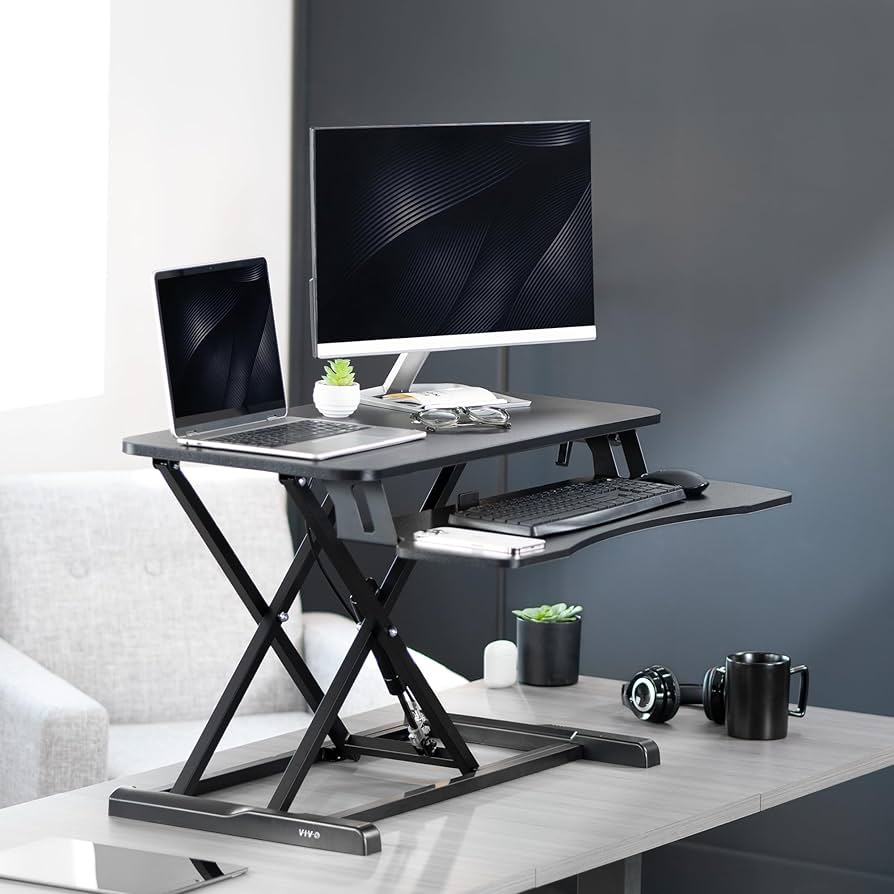
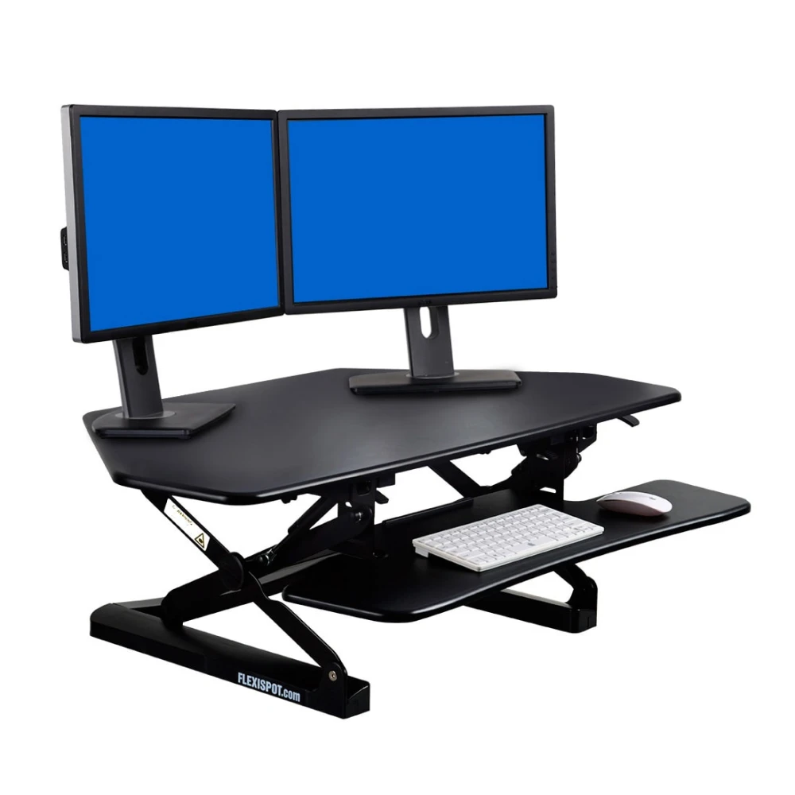
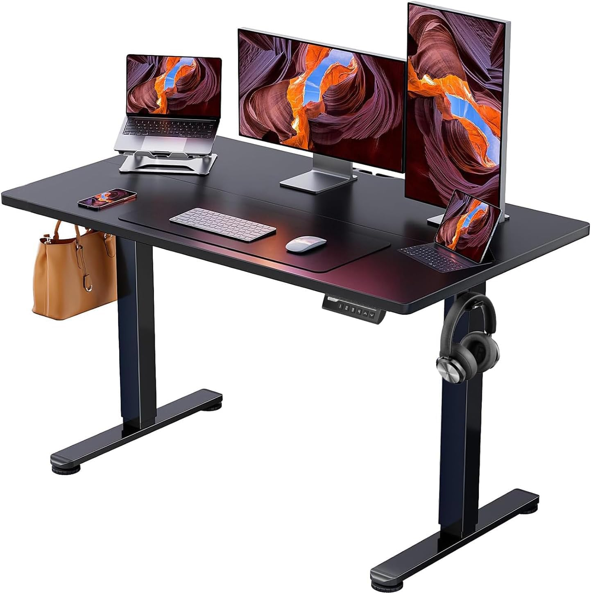

Best Office Chairs Under $200
Discover the top 10 ergonomic office chairs that won't destroy your budget. I've tested over 50 chairs to find the perfect balance of comfort, durability, and affordability.
| Option | Price Range | Best For | Pros | Cons |
|---|---|---|---|---|
| Desk Converter | $100-250 | Existing desk owners | Keep current desk, easy setup | Less desk space, height limits |
| Full Standing Desk | $200-400 | New office setups | More space, better ergonomics | Higher cost, desk replacement |
| DIY Solution | $30-80 | Budget experimenters | Cheapest option, customizable | Less stable, manual adjustment |
My Recommendation: Start with a desk converter. It's the lowest-risk way to try standing work without replacing your entire setup. If you love it after 3 months, then consider a full standing desk.

After testing 8 different converters, this VIVO model offers the best combination of stability, size, and ease of adjustment. I've used it daily for 4 months.
What Works:
What Doesn't:
Best For: People with large, sturdy desks who want the most stable converter experience.
Amazon: $89
VIVO Direct: $169 + shipping
Best Deal: Watch for Amazon Prime Day sales

FlexiSpot specializes in standing desks, and it shows. This converter has the smoothest adjustment mechanism I've tested, plus some thoughtful design touches.
Standout Features:
Trade-offs:
Best For: Single-monitor users who want premium adjustment experience and don't mind paying extra.

This is the desk that convinced me electric adjustment is worth the extra cost. Push-button height changes in 20 seconds vs manual cranking for 2 minutes.
Why It's Great:
Reality Check:
Best For: Anyone setting up a new office who wants the convenience of electric adjustment without paying $500+.
Not ready to spend $200+? These DIY solutions let you experiment with standing work for under $80:
Materials:
Setup: Mount shelf above your regular desk at standing height. Move laptop/monitor up when you want to stand.
Pros: Cheap, stable, looks decent
Cons: Manual switching, limited height adjustment
Materials:
Setup: Adjust laptop stand for standing height, use external keyboard at desk level.
Pros: Portable, height adjustable, proper ergonomics
Cons: Small screen, not suitable for extended standing
Materials:
Setup: Stack boxes to desired height, place monitor/laptop on top with non-slip mat.
Pros: Nearly free, experiment friendly
Cons: Looks unprofessional, stability issues, hard to adjust
Standing 8 hours straight is as bad as sitting 8 hours straight. The goal is movement and position changes, not replacing one static position with another.
Optimal Standing Schedule:
Start with 15-30 minutes per hour. Work up to standing 50% of your day over 2-3 weeks. Some people prefer 2-hour standing/sitting blocks, others switch every 30 minutes. Find what works for you.
It can help, but it's not a cure-all. Proper chair ergonomics, regular movement, and addressing underlying issues are equally important. If you have chronic pain, consult a healthcare professional.
Depends on usage. If you'll use it daily for years, the smoother adjustment and better build quality of $400-600 desks makes sense. For occasional use or trying it out, budget options work fine.
Height range is crucial. Most desks adjust from 28-46 inches. If you're under 5'2" or over 6'4", check the range carefully. You might need a platform or custom solution.
First-time standing desk users: Start with VIVO Height Adjustable Converter ($179). Test standing work without replacing your desk.
Setting up new office: Get SHW Electric Height Adjustable Desk ($289). Electric adjustment makes the difference in actually using it daily.
Tight budget: Try DIY laptop stand solution ($65). If you like it after 1 month, upgrade to a real standing desk.
Remember: The best standing desk is the one you'll actually use consistently.
Discover the top 10 ergonomic office chairs that won't destroy your budget. I've tested over 50 chairs to find the perfect balance of comfort, durability, and affordability.

Transform any space into a productivity powerhouse. Complete guide to choosing the right desk, monitor setup, and accessories for maximum efficiency.

Proper lighting can make or break your workday. Learn the science behind productive lighting and get my exact recommendations for every budget.

Living in a studio or sharing space? I'll show you how to create a professional office setup in just 25 square feet without compromising on functionality.

Poor ergonomics cost you thousands in medical bills and lost productivity. Learn the exact positioning and equipment that keeps your body healthy during long work days.

Not sure how much to spend on each component? Use my interactive calculator to optimize your budget allocation and get the most value for your money.

Everything you need for a professional home office: desk, chair, lighting, and accessories for under $500.

Top 10 ergonomic office chairs under $200 that actually support your back during long work days.

Create a productive workspace in tiny apartments, bedrooms, or shared spaces with these space-saving solutions.
Get my complete home office setup checklist, budget calculator, and exclusive deals delivered to your inbox.